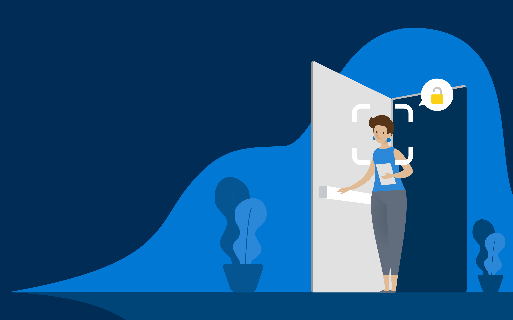
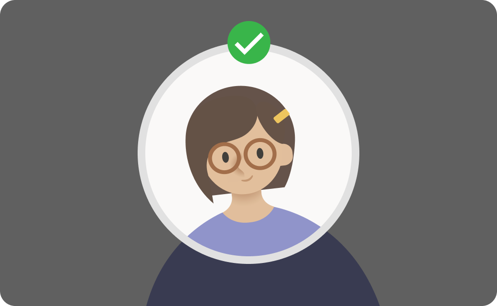
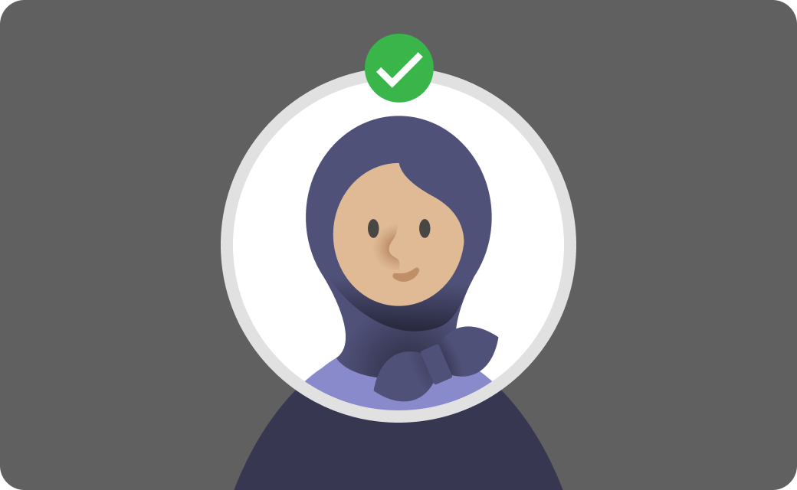
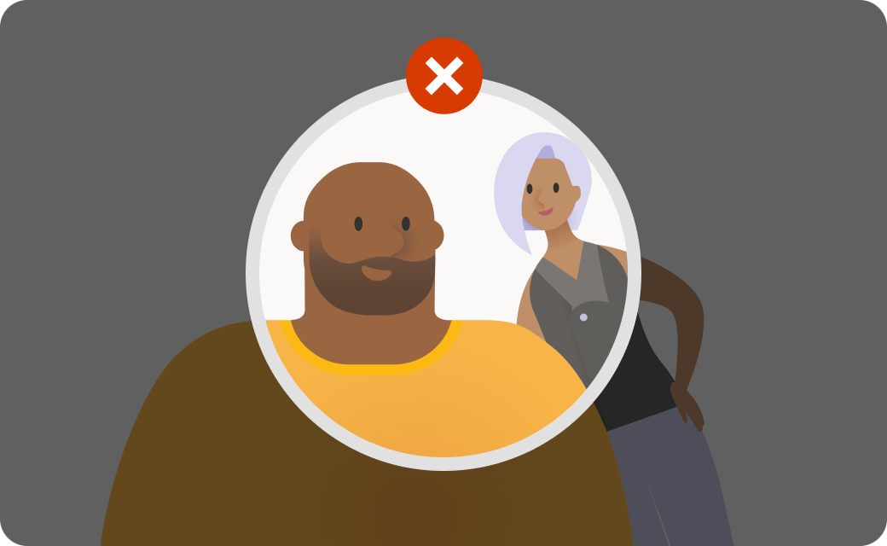

Face Enrollment Demo
This demo captures a face image, creates a face template, and shows the enrollment result.
Step 1 of 3
Tell us who you are
Enter your full name to get started. A User ID will be generated automatically after capture.
Step 2 of 3
Tips for creating a face template
The photo will be taken automatically once your face is detected in position — no button needed. These photos will only be used to create your face template and will not be stored.

😊The camera works best when your face is fully visible and the photos show how you look on a typical day.

👀Look straight ahead and center your face in the oval guide.

🧍Make sure you're the only person in view.
Some accessories can obscure parts of your face, such as a cap, sunglasses, or a face mask, so you might need to adjust these while taking the photos.
Center your face inside the oval
Photo is taken automatically when your face is detected — no button needed
Step 3 of 3
You're enrolled!
Your enrollment has been completed successfully for this demo.
Summary of data being stored
Your face template
Used for identity verification in this enrollment workflow
Access control
Restricted to authorized system roles
Retention policy
Raw image follows your retention choice. Template remains until removed.
Demo note
Use this portal to re-run enrollment, compare outcomes, or remove a test profile.
Enrollment checklist
•
Your face template is linked to the generated user profile
•
Enrollment is complete and ready for profile management
•
You can return anytime to re-enroll or remove the profile
Recommended next action
Review the enrollment details and proceed with your next test profile.
Verify this enrollment
Run a liveness check first, then verification executes automatically.
If results need review
If enrollment fails, retry with stable lighting and a centered face.
If needed, remove the profile and re-enroll to compare behavior.
Keep the User ID and Person ID for troubleshooting logs.
Verification flow
Run liveness, then verify
Click the button below. The system runs liveness first and, if passed, automatically verifies identity.
ENROLLING...